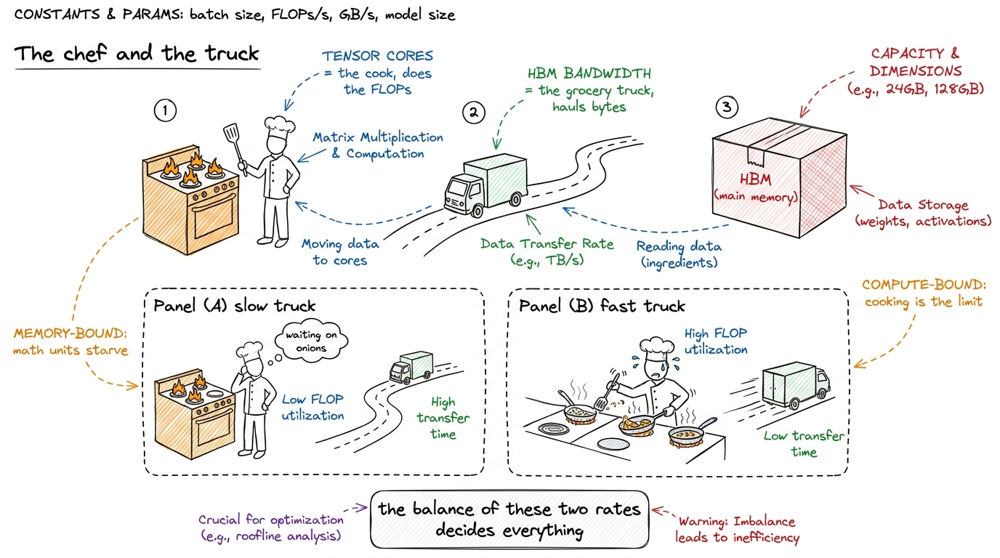
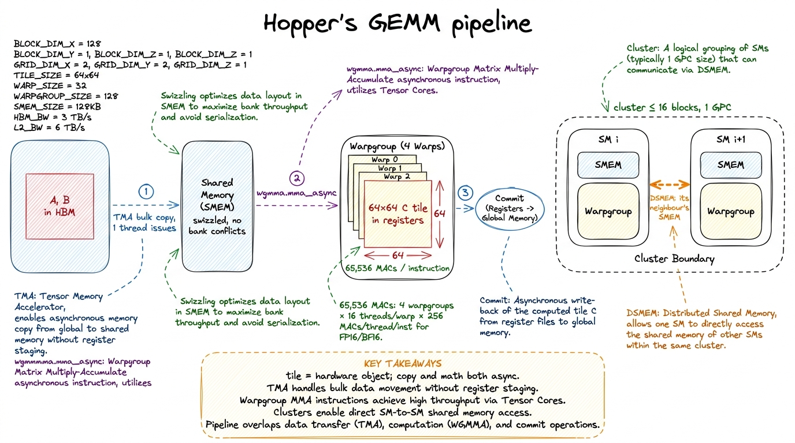
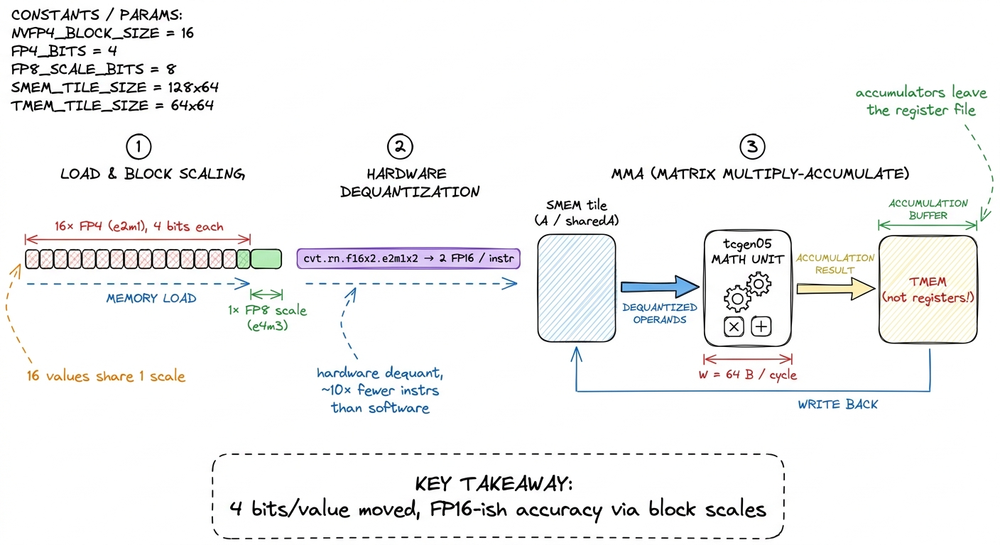
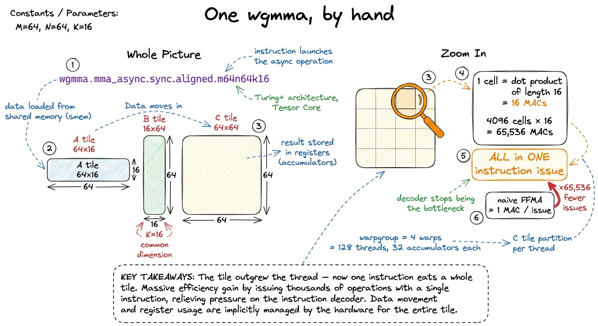
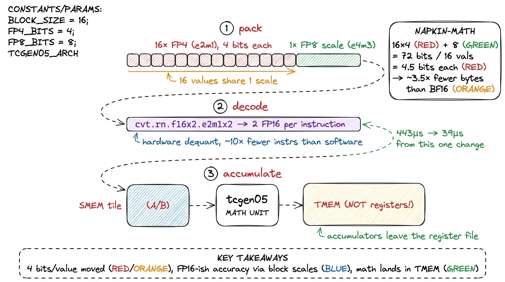
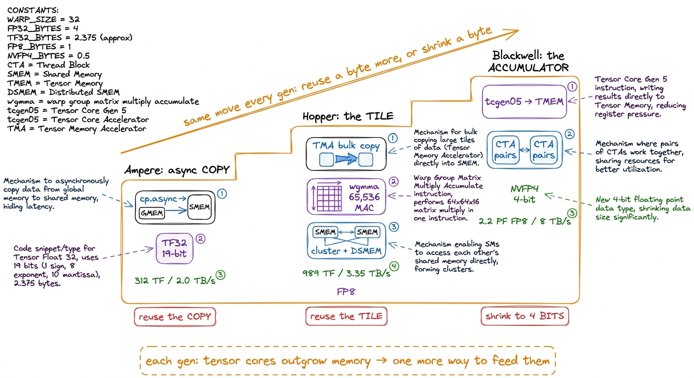

A100 → H100 → B200: what changed
Every time NVIDIA ships a new datacenter GPU, a cohort of kernel engineers has to relearn part of their job. That is a strange sentence. Let me convince you it is true before we spend the rest of the article unpacking why.
Here is the puzzle. A well-written matrix-multiply kernel from 2020 — one that coalesces its loads, tiles into shared memory, and keeps the arithmetic units busy — still compiles and runs on a 2024 chip. Nothing breaks. So why would anyone rewrite it? The answer is that "runs" and "runs fast" have drifted apart. That same kernel, which hit maybe 90% of peak on an A100, might reach only a small fraction of peak on an H100, and a smaller fraction still on a B200 — not because it got worse, but because the chip underneath it got lopsided in a very specific way. The math units grew enormously; the pipe feeding them barely grew at all. The old kernel keeps the pipe full, but the pipe is no longer the thing that matters.
So the question this article answers is: what actually changed in the silicon between Ampere (A100), Hopper (H100), and Blackwell (B200), and why does each change force a rewrite of the fastest kernels? We are going to answer it from the ground up. You do not need to have written a CUDA kernel before. You need exactly one idea, and I will build it in the next two paragraphs.
The one number that explains everything
Every computation on a GPU is a tug-of-war between two rates. One rate is how fast the chip can do arithmetic — multiply-add operations per second, its FLOP/s (floating-point operations per second). The other is how fast the chip can fetch the numbers to do arithmetic on — bytes per second out of its main memory, its bandwidth, measured in TB/s. Every kernel lives or dies by the balance between these two.
Here is the mental model I want you to carry through the whole article, and we will reuse it in every section. Picture a chef at a stove. The stove is the arithmetic — the tensor cores. The grocery-delivery truck is the memory bandwidth, hauling ingredients from the warehouse (HBM, the chip's main memory) to the counter. If the truck is slow, it does not matter how fast the chef cooks: the chef stands idle waiting for onions. We call that memory-bound. If the truck is fast enough to keep the counter stocked, the chef's own speed is the limit; we call that compute-bound. Almost every GPU performance story is a story about which of these two is starving the other.

figure rendering · The whole article in one picture: tensor cores are the cook, bandwidthNow the single most important fact in this article, the thread that ties all three generations together: each generation adds cooking speed far faster than it adds delivery speed. The stove gets dramatically hotter every two years; the truck gets only a little quicker. Look at the raw numbers and the imbalance is almost violent. The A100 does about 312 TFLOP/s of BF16 tensor math against roughly 2.0 TB/s of HBM. The H100 jumps to 989 TFLOP/s of BF16 against 3.35 TB/s. The B200 reaches on the order of 2.2 PFLOP/s of dense FP8 — that is 2,200 TFLOP/s — against about 8 TB/s. Between A100 and B200 the compute grew roughly 7× (and far more if you count the new low-precision formats), while the bandwidth grew about 4×. The gap widens every single generation.
Why the ridge point marches right
Let me make that gap concrete, because it is the pivot the whole article turns on. There is a break-even ratio for every chip called the arithmetic intensity at the ridge point. Arithmetic intensity is just: for every byte you haul from memory, how many FLOPs do you get to do on it? If you fetch a byte and do only one multiply on it, your intensity is low and the truck is your bottleneck. If you fetch a byte and reuse it in a thousand multiplies, your intensity is high and the stove is your bottleneck.
The ridge point is the intensity where the two rates exactly balance. Below it you are memory-bound; above it you are compute-bound. You compute it by dividing the chip's peak FLOP/s by its peak bytes/s. For the A100: 312e12 / 2.0e12 ≈ 156 FLOP per byte. For the H100 in BF16: 989e12 / 3.35e12 ≈ 295 FLOP per byte. For the B200 in FP8: 2200e12 / 8e12 ≈ 275 FLOP per byte, and in NVFP4 it climbs higher still. So to keep the newest chip's stove busy, you must reuse every byte you fetch far more times than the older chip demanded. This is the deep meaning of "the ridge point marches right": each generation, the bar for how much reuse you need just to break even gets higher.1 These ridge numbers are round. Vendor peak FLOP/s assume perfect tensor-core utilization at boost clock, and HBM never delivers 100% of its rated bandwidth in practice — 80–90% is a good day. Treat the ridge point as an order-of-magnitude target, not a threshold to tune against to the decimal.
And here is the consequence that makes kernel engineering hard: a workload's arithmetic intensity is fixed by the math, not by the chip. A big square matrix multiply is inherently high-intensity — reuse is baked in. But the same operation that was comfortably above the A100's ridge might sit below the H100's, purely because the ridge moved. So a kernel that was compute-bound (good, you're using the expensive silicon) silently becomes memory-bound (bad, the silicon idles) when you move it to a newer chip, even though you changed nothing. That is the "relearn your job" phenomenon from the opening, stated precisely. Every architectural feature we are about to meet exists to fight this drift — to claw a stalling kernel back above the rising ridge by reusing bytes harder or by making each byte carry more math.

figure rendering · Compute outruns bandwidth every generation, so the ridge point marchesWith that one picture in hand, every feature below becomes readable. Watch for the pattern: each is either a way to reuse a byte more or a way to make a byte carry more math. That is the entire game.
A100 (Ampere): the asynchronous copy arrives
The A100 is where the modern GEMM kernel starts to look modern, and it introduced two things that still shape how we write code today. Both, you will see, are moves to keep the stove fed.
The first is cp.async. To understand why it matters, we have to look at what staging a tile of data used to cost. A GEMM kernel works by copying small tiles of the input matrices A and B out of slow main memory into fast on-chip shared memory, then reusing each tile many times. Before Ampere, that copy was a two-hop journey. A thread issued a global load — but a load does not deliver into shared memory; it delivers into a register, a thread's private scratch slot. Then the thread had to write that register out to shared memory. Two problems. First, every tiled byte squatted in a register on the way through, and registers are the scarcest resource on the chip. Second, and worse: the load blocked. Reading from HBM takes hundreds of cycles — around 500 on modern parts. During those cycles the thread that issued the load had nothing to do but wait. The stove sat cold while the truck was en route.
cp.async breaks that dependency. It copies from global memory straight into shared memory without ever touching a register, and it does so asynchronously — the thread fires the copy and keeps going.2 In PTX the instruction is cp.async.cg.shared.global. The .cg ("cache global") variant bypasses L1 and caches only in L2, which is what you want for streaming tiles you will read once and never revisit from global memory. The .ca variant caches in L1 too, better for data you will re-read. Now think about what that enables. You can issue the copy for the next tile and immediately start computing on the current one. The truck is driving to the warehouse for tomorrow's onions while the chef cooks today's. This is software pipelining, also called double buffering, and it is the reason a good Ampere GEMM overlaps memory and math instead of alternating between them. Instead of "wait for tile, compute, wait for tile, compute," you get "compute while the next tile flies in behind your back."

figure rendering · Blocking loads leave the cook idle while the truck drives. cp.async leThe second Ampere feature is TF32 (TensorFloat-32). This is a make-each-byte-carry-more move in disguise, and it needs a tiny bit of number-format background. A 32-bit float (FP32) splits its bits into a sign, an 8-bit exponent (the range — how big or small the number can get), and a 23-bit mantissa (the precision — how many significant digits). Tensor cores are wide multiply-add machines, but they run much faster on narrower numbers. TF32 keeps FP32's full 8-bit exponent but chops the mantissa to 10 bits, giving a 19-bit format. One caveat worth internalizing: TF32 is a compute mode, not a storage mode — values still live in memory as ordinary FP32 and the tensor core truncates the mantissa on the way in. So TF32 speeds up the arithmetic but saves no bandwidth, a genuinely different kind of win from FP8 and FP4, which save both. Because the exponent is untouched, the scale of your numbers is preserved — no overflow surprises — you just lose some digits of precision that most neural networks never miss. The payoff: roughly an 8× tensor-core speedup over true FP32, nearly for free. TF32 is the moment tensor cores stopped being an inference curiosity and became the default path for the bulk of deep-learning math.
Both A100 features answer the same pressure we diagnosed with the roofline. Ampere's 312 TFLOP/s of tensor throughput was already far ahead of its 2 TB/s of HBM, so the chip could only stay fed if the copy engine ran ahead of the math. cp.async is the tool that lets it, and TF32 shrinks the arithmetic so more of it fits under the ceiling.
H100 (Hopper): the tile becomes a first-class object
Hopper is the largest single jump in how you write a GEMM, and there is one sentence that captures why: Hopper stopped treating the tile as something threads assemble by hand and made it a hardware primitive. On Ampere, a "tile" is a fiction the programmer maintains — a patch of shared memory that 128 or 256 threads cooperatively fill, each computing its own address, each copying its own slice. On Hopper, the tile becomes an object the hardware natively copies, consumes, and shares. Four features build this, and they interlock. We will take them one at a time, and each one, again, is a reuse-a-byte or shrink-a-byte move.
TMA — one thread copies the whole tile
TMA (Tensor Memory Accelerator) replaces cp.async for the heavy lifting. Here is the mechanism. Instead of every thread computing an address and issuing its own copy, you build one small descriptor called a tensor map — a 128-byte structure that encodes the full matrix's shape, its strides in memory, and the geometry of the tile you want to pull out.3 You build the tensor map on the host with the driver call cuTensorMapEncodeTiled, and it must be 128-byte aligned. The tile transfer is cp.async.bulk.tensor.2d.shared::cluster.global. Notice "bulk" and "tensor" in the name: it is one bulk transfer of a whole multi-dimensional tile, not a scatter of scalar loads. Then a single thread issues one instruction that copies an entire 2D (or higher-dimensional) tile from global memory into shared memory. The hardware does all the address generation.
Why is that a big deal, beyond saving a few instructions? Two reasons. First, it frees 127 of every 128 threads from address arithmetic — they do not stall waiting to compute where their byte lives; they go compute. Second, and this is the quiet win, TMA does swizzling in hardware. Shared memory is physically split into 32 banks, and if many threads hit the same bank at once, the accesses serialize — a bank conflict, one of the classic ways a naive kernel loses half its shared-memory throughput. Earlier kernels avoided this with hand-tuned padding tricks (add 4 extra elements to a row of 128 so consecutive accesses spread across banks). TMA lays the tile into shared memory in a bank-conflict-free swizzled pattern automatically, encoded in the descriptor. An entire category of fiddly, error-prone kernel code simply disappears.
wgmma — one instruction, 65,536 multiply-adds
wgmma (warpgroup matrix-multiply-accumulate) is the new math instruction, and its scale is the thing to internalize. Let me derive it by hand so the number is not magic. A single wgmma.mma_async.sync.aligned.m64n64k16 instruction multiplies a 64×16 tile of A by a 16×64 tile of B and accumulates into a 64×64 tile of C. Count the multiply-accumulates: every one of the 64×64 = 4,096 output elements is a dot product of length 16, so that is 4,096 × 16 = 65,536 multiply-accumulates. One instruction. Compare the naive kernel, whose innermost operation is a scalar FFMA (fused multiply-add) that retires one multiply-accumulate per instruction issued. wgmma collapses about 65,000 instruction issues into a single one.
Why does that matter so much? Because a GPU's instruction decoder can only issue so many instructions per cycle. In a naive kernel drowning in scalar FFMAs, the decoder itself becomes the bottleneck — you cannot issue math fast enough to keep the arithmetic units busy, regardless of memory. wgmma removes the decoder from the equation entirely: one issue lights up the whole tensor core for many cycles. The 64×64 output lives distributed across the warpgroup's registers — a warpgroup is four warps, 128 threads working as a unit — with each thread holding 32 accumulator floats (a 4×8 fragment) in a hardware-fixed layout you must respect when you copy the result out. That copy-out code is, as we will see, exactly what breaks on the next generation. And critically it is mma_async: the instruction queues and returns immediately, and you synchronize later with wgmma.commit_group then wgmma.wait_group. So the math now pipelines the same way TMA copies do — you can have several MMAs in flight while you stage the next tiles.

figure rendering · Zooming into a single wgmma: every one of the 4,096 output cells is aClusters and DSMEM — reuse a byte across several SMs
The third piece answers a sharper version of our central question: we know we must reuse each HBM byte more times to feed the wider math — but a single SM (Streaming Multiprocessor, the GPU's fundamental compute block) can only hold so much in its own shared memory. What if several SMs could share a tile that only one of them fetched?
That is exactly what thread-block clusters and DSMEM (Distributed Shared Memory) provide. A cluster is a group of up to 16 thread blocks that the scheduler guarantees run concurrently on SMs inside one GPC (Graphics Processing Cluster). The H100 has 8 GPCs spread across its 132 SMs, 18 SMs per GPC — and 132 is the shipping SXM count, with the full GH100 die actually holding 144 SMs, some fused off for manufacturing yield.4 16 is the non-portable maximum cluster size; the size CUDA guarantees on any architecture is 8. A cluster maps onto a single GPC, which is why the reuse ceiling tracks GPC size (18 SMs) rather than the full 132. Blocks in a cluster can read each other's shared memory directly, over a dedicated SM-to-SM network, without a round-trip through L2 (the ~50 MiB chip-wide cache). DSMEM latency sits in the gap between per-SM shared memory (~20–30 cycles) and L2 (a couple hundred). For GEMM the payoff is direct: a tile fetched once from HBM by one SM can feed several SMs in its cluster, multiplying the effective reuse of every expensive HBM read instead of re-fetching the same tile per block. That is a reuse-the-byte move at a scale Ampere simply could not express.
FP8 — make each byte carry more math
FP8 is the fourth feature, and it is the pure shrink-the-byte move. Hopper's tensor cores natively multiply 8-bit floats in two flavors: e4m3 (4 exponent, 3 mantissa bits — more precision, less range) and e5m2 (5 exponent, 2 mantissa — more range, less precision). Going from 16-bit to 8-bit does two things at once: it doubles tensor throughput and it halves the bytes you move. Both sides of the roofline improve. But 8 bits of range is thin, and values can easily overflow or vanish, so FP8 GEMM needs scaling factors — a per-tensor or per-block multiplier that keeps the values inside the representable window, applied and undone around the matmul. This is your first taste of the "quantize, then rescale" dance that Blackwell will make central — and the reason FP8 GEMM needs care: pick the scale wrong and your values either saturate to infinity or collapse to zero.
One more Hopper number ties this together: Hopper packs shared memory and L1 into 256 KiB per SM, with up to 228 KiB usable as shared memory. That large budget is not a luxury — it is what lets you stage the deep multi-stage software pipelines (three, four, five tiles in flight at once) that TMA and wgmma were built to be fed by. Async copy and async math are only useful if you have somewhere to buffer all the in-flight work.
So a Hopper GEMM reaches for a completely different top-of-ladder than an Ampere one. The naive-to-tuned climb still applies — you still fix coalescing, still tile into shared memory, still crawl up from a naive kernel at 8.2% of cuBLAS through register tiling and vectorized loads toward the high nineties — but the final rungs are now TMA + wgmma + cluster-level reuse rather than hand-written float4 loads and register tiles. I want to make that climb concrete for a moment, because it is the worklog rhythm this whole site runs on.
A quick look at the climb, so the rungs are real
On an H100, a naive matmul — one thread per output element, each re-reading its whole row and column from global memory — lands around 4.2 TFLOP/s, about 8.2% of cuBLAS. It is catastrophically memory-bound: every thread hauls the same data everyone else is hauling. Tile into shared memory so a block loads each tile once and reuses it, and you get a 1.7× jump to 13.9 TFLOP/s. Give each thread a small 2D block of outputs to compute — register tiling — so it reuses values sitting in registers, and you reach about 36.8% at 19.1 TFLOP/s. Switch the loads to vectorized float4 reads (16 bytes per instruction instead of 4) and you jump to 72% at 37.2 TFLOP/s — the profiler shows the scheduler going from 55% to 66% issue-active and the load-store unit's share of instructions dropping because each load now moves 4× the data.5 Those percentages are against an FP32 cuBLAS baseline in a from-scratch teaching kernel; the exact figures depend on matrix size, clocks, and driver version. The shape of the climb — each optimization roughly compounding on the last — is the durable lesson, not the specific decimals. Then warp tiling, then, at the very top, the Hopper-native TMA + wgmma path that closes the last gap. Each rung is the roofline talking: what is this kernel waiting on, and which reuse trick answers it?
B200 / GB300 (Blackwell): the accumulator leaves the registers
Blackwell pushes the same logic one step further, and the step is subtle enough that it trips up engineers porting Hopper kernels — a naive port can actually run slower before it runs faster. Let me set up the problem it solves.
On Hopper, remember, the wgmma output tile lives in registers — 32 accumulator floats per thread. That is a hard ceiling. The register file is only 256 KB per SM (65,536 32-bit registers total, and a thread can use at most 255 of them), and those accumulators compete for that space with every address, loop counter, and temporary the kernel needs. As tensor cores got wider still on Blackwell, wanting even larger output tiles, that register ceiling started to bind: there was physically nowhere to put a bigger accumulator.
TMEM — a dedicated home for accumulators
TMEM (Tensor Memory) is Blackwell's answer: a brand-new, dedicated on-chip memory bank whose only job is to hold tensor-core accumulators, physically separate from the register file. The new MMA instruction, tcgen05, reads its operands from shared memory and writes its result into TMEM — not into registers.6 This is precisely why a naive Hopper→Blackwell port can regress. Hopper kernels contain hand-written code that shuffles wgmma register fragments into the right layout to copy out. On Blackwell that data path moved: results land in TMEM, and you must add explicit code to stage them out of TMEM. Skip that rethink and you either get wrong answers or a slow fallback path. The accumulator moving is the single biggest "relearn your job" moment of the generation. Why is freeing the register file worth a whole new memory type? Because the register file was doing double duty — holding accumulators and all the per-thread bookkeeping. Move the accumulators out and each thread suddenly has room for more of the addressing, scaling, and pipelining logic that a still-larger math instruction demands. It is the same instinct as TMA freeing threads from address math, applied to the register file.
CTA pairs — the tile outgrows a single block
CTA pairs are the second change, and they are a beautiful continuation of one idea. Watch the progression: on Ampere the tile was assembled by threads; wgmma made the tile outgrow the single thread and become a warpgroup's job; clusters let a tile be shared across blocks. Blackwell takes the next step — it lets two CTAs (Cooperative Thread Arrays, the formal name for thread blocks) on adjacent SMs jointly issue a single MMA that spans both of them, a "2-CTA MMA." The pair cooperates on one larger tile, reading operands and writing accumulators across the CTA-pair boundary. The tile has now outgrown a single block. Each generation the unit of "one tile" gets bigger, because each generation the math units got wider and needed a bigger bite to stay fed.
NVFP4 — 4 bits per value, and the story reaches its end
NVFP4 is the headline, and it is where the "add FLOPs faster than bandwidth" story reaches its logical conclusion. Trace the reasoning one last time: if you cannot move more bytes per second, then make each byte carry more math. Hopper's FP8 already halved the bytes versus BF16. NVFP4 halves them again — it is a 4-bit float, e2m1: one sign bit, 2 exponent bits, 1 mantissa bit. That is almost no numeric range at all. On its own a 4-bit float is a toy; it cannot represent the spread of values in a real weight matrix.
So how does a 4-bit format give usable accuracy? Micro-block scaling. You do not store one number per weight — you store a group of weights that share a scale. Every group of 16 FP4 values carries one FP8 (e4m3) scale factor. Within a group, the 16 tiny 4-bit numbers express the relative values; the shared FP8 scale sets the group's magnitude. Do the byte accounting by hand: 16 values × 4 bits = 64 bits of data, plus one 8-bit scale = 72 bits for 16 numbers, which is 4.5 bits per value all-in. Against BF16's 16 bits per value, that is roughly a 3.5× reduction in bytes moved — and the shared scale buys back most of the accuracy you would expect to lose, because the values that actually matter are the relative ones inside each block.7 Contrast the coarser MXFP4 convention: 32-element blocks with an e8m0 power-of-two-only scale. NVFP4's smaller 16-element blocks and richer e4m3 scale (which can be any value, not just a power of two) give meaningfully better accuracy per bit — which is why NVFP4 is the format Blackwell's tensor cores decode natively in hardware.
And the hardware decodes it inline. The data path is: load the packed 4-bit weights and their FP8 scales from memory, and let the tensor core dequantize on the fly. Blackwell provides PTX conversion intrinsics for exactly this — cvt.rn.f16x2.e2m1x2 unpacks two FP4 values into two FP16 values in a single instruction. Using that hardware path cuts the decode instruction count by roughly 10× versus doing the same bit-twiddling by hand in software. In one hackathon writeup, moving a from-scratch NVFP4 kernel from a software decoder to these hardware intrinsics dropped a batched GEMV from 443 μs to 39 μs — more than a 10× jump from that one change — before PTX-level fusion and processing two tiles per loop iteration took it down to about 22 μs.8 That 22 μs figure is a specific batched-GEMV leaderboard result, not a general GEMM number, and it started from a 2,000 μs naive CUDA kernel — a ~90× total climb. The lesson to carry is the ordering: the single biggest win came from letting the hardware do the dequant, exactly the wgmma-decoder lesson repeating one generation later.

figure rendering · NVFP4 packs 16 four-bit values behind one FP8 scale — 4.5 bits per valThe arithmetic that motivates all of this is, once more, stark. A B200 does on the order of 2.2 PFLOP/s of dense FP8 tensor math and more again in NVFP4, against roughly 8 TB/s of HBM3e. Compute climbed far more than bandwidth did, exactly as it has every generation — so the ridge point sits further right than ever, and a GEMM that does not exploit 4-bit weights, inline dequant, CTA-pair tiles, and TMEM-staged accumulation simply cannot keep those tensor cores lit. The chef's stove got hotter again; the truck barely sped up; and Blackwell's whole feature set is the kitchen redesign that keeps the cook from starving.
What this means for the ladder
Let me pull the three generations into one line each, using the mental model we have carried the whole way. Ampere gave us the asynchronous copy (cp.async) so the truck could run ahead of the cook, and TF32 to shrink the arithmetic. Hopper made the tile a hardware object — copied by TMA, consumed by wgmma, shared across a cluster over DSMEM — and added FP8 to move fewer bytes. Blackwell moved the accumulator out of the register file into TMEM, paired CTAs for still-larger tiles, and pushed precision down to 4 bits with hardware micro-block scaling.

figure rendering · Three generations, one repeated move: because the tensor cores keep ouEvery one of those moves is the same move wearing a different costume: the tensor cores got wider than the memory system, and the architecture responded by finding one more way to reuse a byte or make a byte carry more math. Once you see that, the feature lists stop being a pile of acronyms to memorize and become a single, predictable story — and you can guess what the next generation will need before it ships.
That is also why the GEMM ladder is never finished. The naive kernel at 8.2% of cuBLAS, and the coalescing, shared-memory, and register-tiling rungs that carry you to the high nineties on one generation, are table stakes on the next — necessary but no longer sufficient, because the ridge point moved out from under them. On Ampere the top of the ladder was vectorized loads and warp tiling; on Hopper it grew a TMA-and-wgmma rung; on Blackwell it grows a TMEM-and-NVFP4 rung above that. When you profile a kernel and find it sitting far below the roofline, the first question is still the one from the three regimes — what is it waiting on? — but the remedy now depends on which silicon you are standing on. Knowing what changed between these three chips is knowing which rung to reach for. And it is all downstream of one number you can compute on a napkin: peak FLOP/s divided by peak bytes/s, climbing to the right, every single generation.